3 Camping person-nights
These facilities provided nearly 7 million person-nights of camping 2009-2020.
Some notes:
- A
person_nightis one person camping one night. So if four people camp on a Friday and Saturday night, that’s 8 person_nights. Based on personal experience organizing group camping events for Scouts, I think person-night counts for group sites are probably less accurate than the others (but likely within 10% of actual). - For most facilities, the data set includes separate
feature_idvalues for each site_type offered. Some have slightly different names, for example, I have combined Cataloochee Group Camp + Cataloochee Horse Camp + Cataloochee Campground into onefacility_namewith a commonfacility_id_group. - For each
facility_id_group,n_sitesis a count of distinctproduct_idvalues. I assume that, in general,product_idvalues have not changed over time, and the same value is not used for multiple campsites at the same facility. This is not quite true, resulting in counts of camping sites in NC varying by up to 7%, depending how you count. For my purposes here this doesn’t matter. Details are in Appendix Section 7.2.4 There is some reuse of product_id values (unfortunately).
3.1 Trends: How much growth is due to new facilities or site types?
As discussed in Appendix Section 7.2.3 Reservable sites added during the years of interest, some recorded growth is due to more inventory added to the recreation.gov reservation system, which inflates the growth rate. How much? In 2019 it was 36% of all person_nights.
In year-based comparison views, I provide both views.
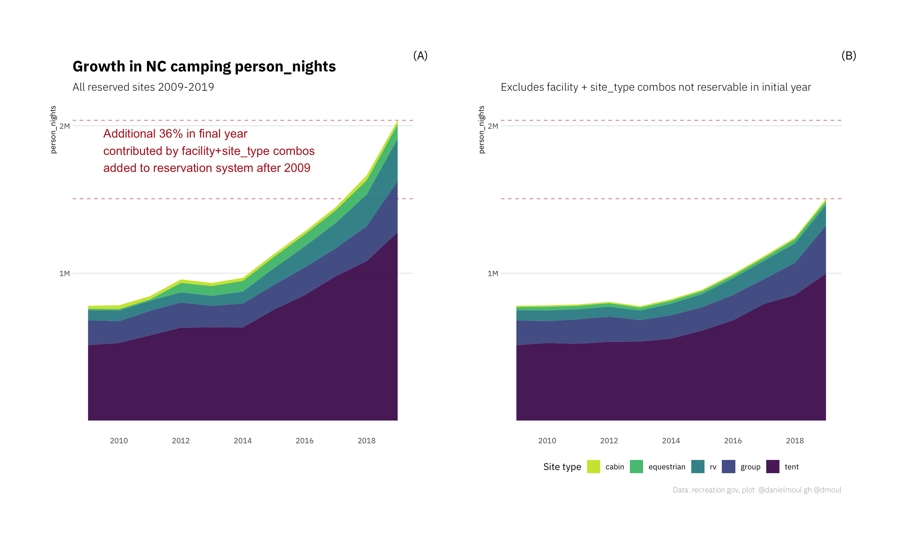
The remainder of this section refers to (B):
After the small dip in 2013 growth started in 2014. The number of additional nights of tent camping make up most of the increase, even though RV and group camping grew faster than tent camping.
Since the small dip in 2013, growth in person_nights in same campgrounds + site_types through 2019 was 93.9%. Why did growth start in 2014 and keep going? There is nothing in the data that answers this question. The compound annual growth rate (CAGR) was 9.9% for person_nights and 9.8% for revenue. Growth varied by site_type:
| NC camping compound annual growth rate 2013 - 2019 Same campgrounds + site types |
||
| site_type | cagr_person_nights | cagr_revenue |
|---|---|---|
| cabin | 8.5% | 7.3% |
| equestrian | 3.2% | 3.7% |
| group | 14.4% | 7.7% |
| rv | 13.8% | 19.4% |
| tent | 10.9% | 11.2% |
The changes year-to-year and across the site types have been more variable than the above table implies:
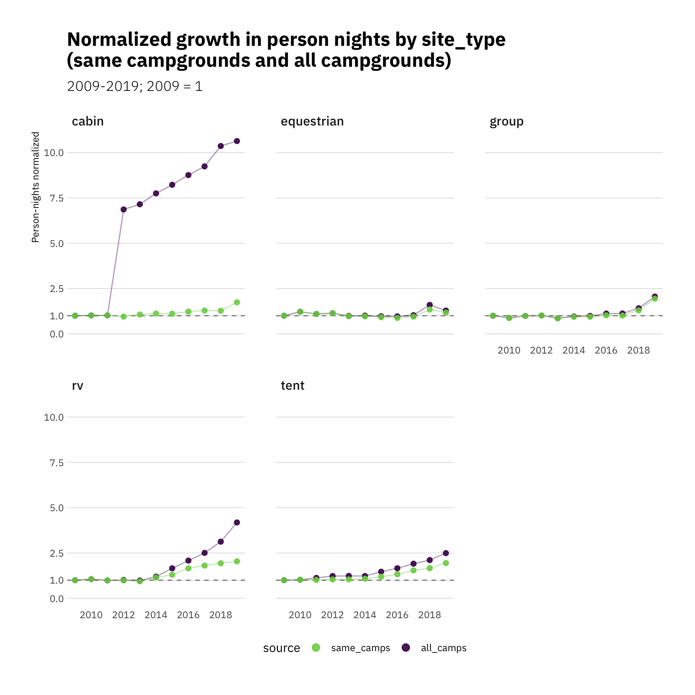
3.2 Trends in person-nights and revenue per park
The changes varied a lot: most campgrounds became more popular; some saw similar levels of popularity, for a small number popularity declined (see for example: Flanners Beach and Tow String Horse Camp).
3.2.1 Camping person-nights by park
Part 1:
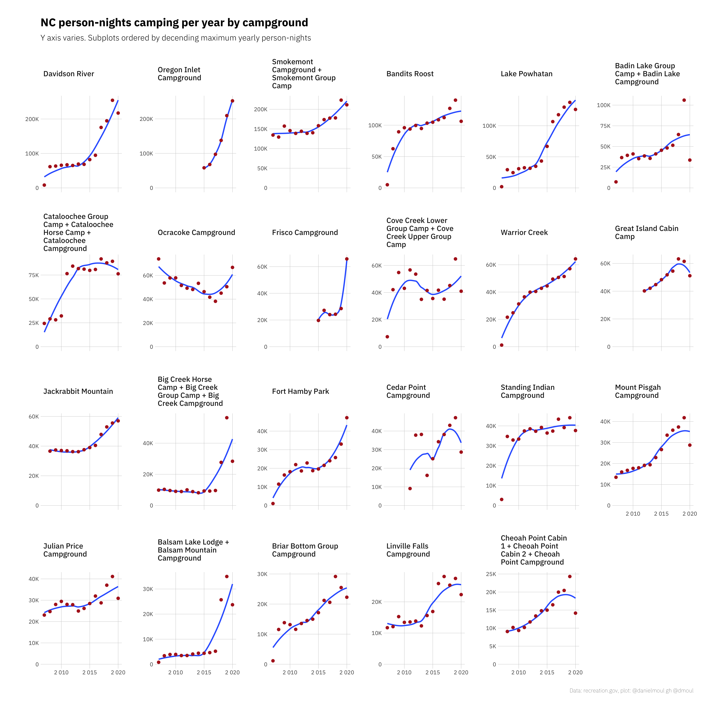
Part 2:
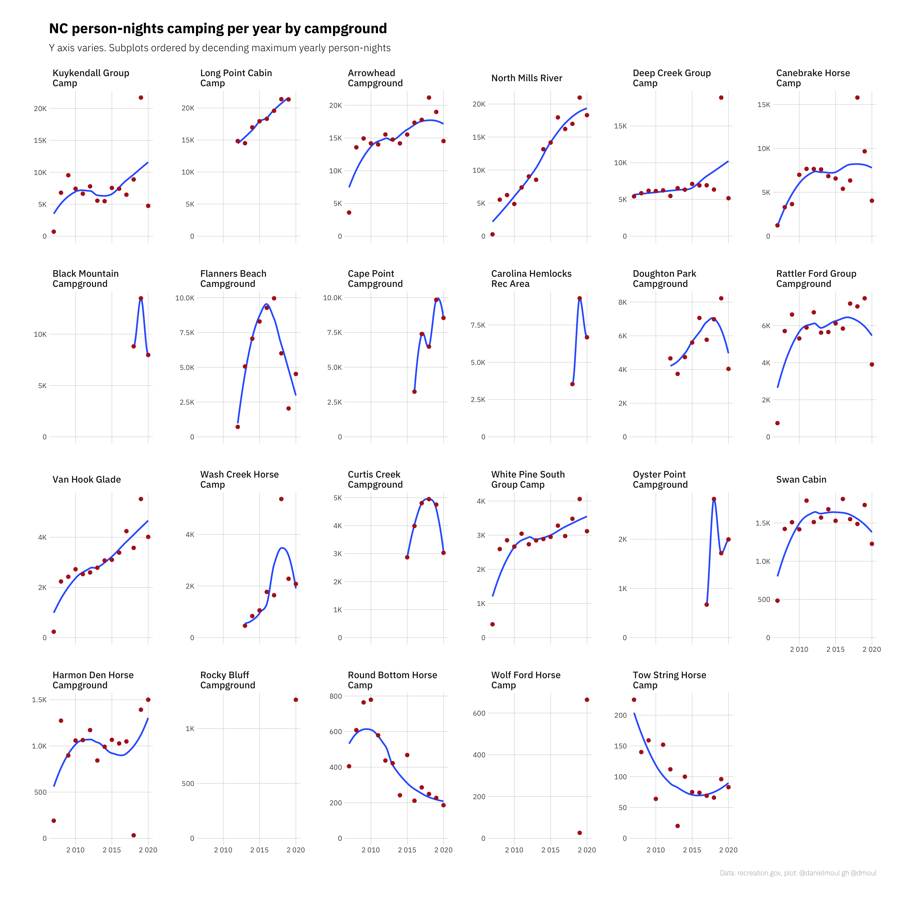
3.2.2 Camping revenue by park
Likewise camping revenue has been increasing in most parks, with 2020 being an anomaly for many of them.
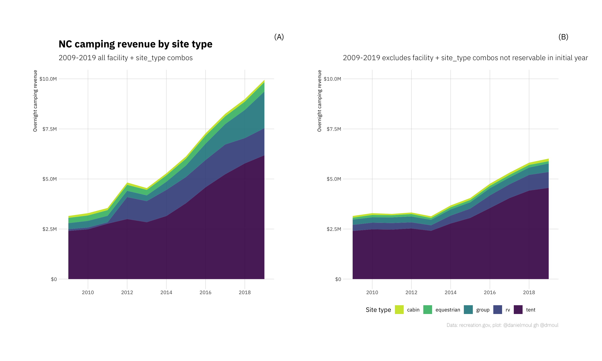
Part 1:
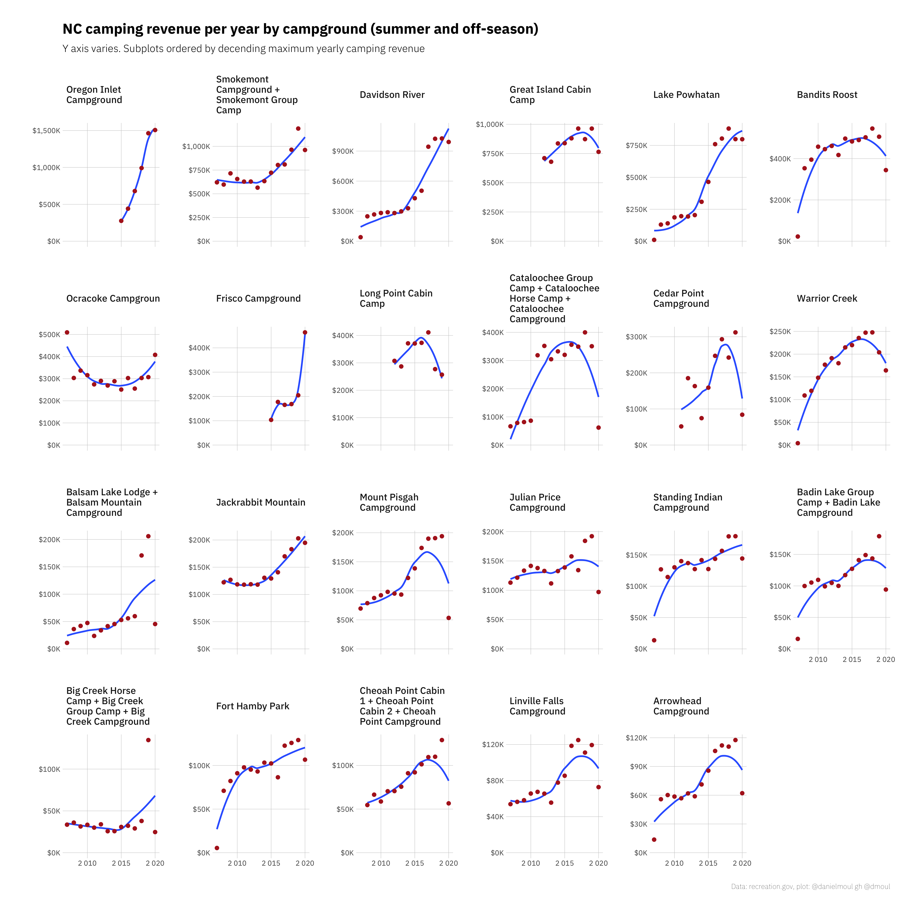
Part 2:
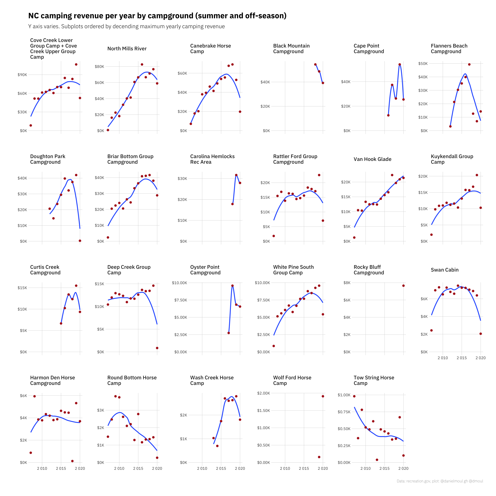
3.3 Are the increases occurring during the summer or off-season?
Defining the summer season to be the four months May 15 to Sep 15, one can see that most camps are busiest during the summer. And while the number of camping person-nights has increased year-round, for most campgrounds, more of the growth has been during the summer:
Part 1:
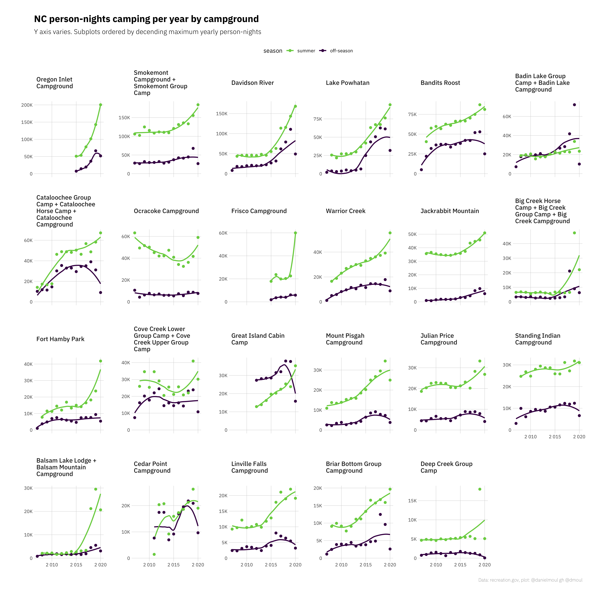
Part 2:
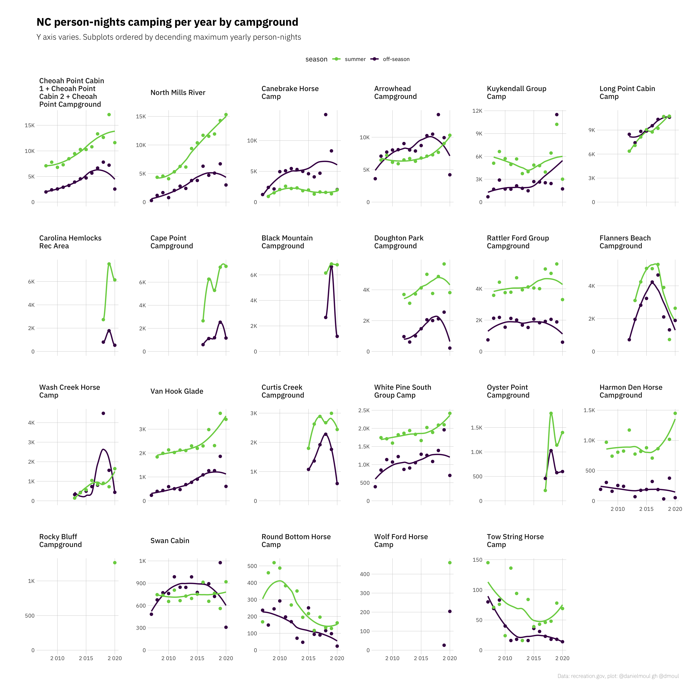
3.4 Are there trends by day of the week?
Weekend nights are about twice as popular as mid-week:
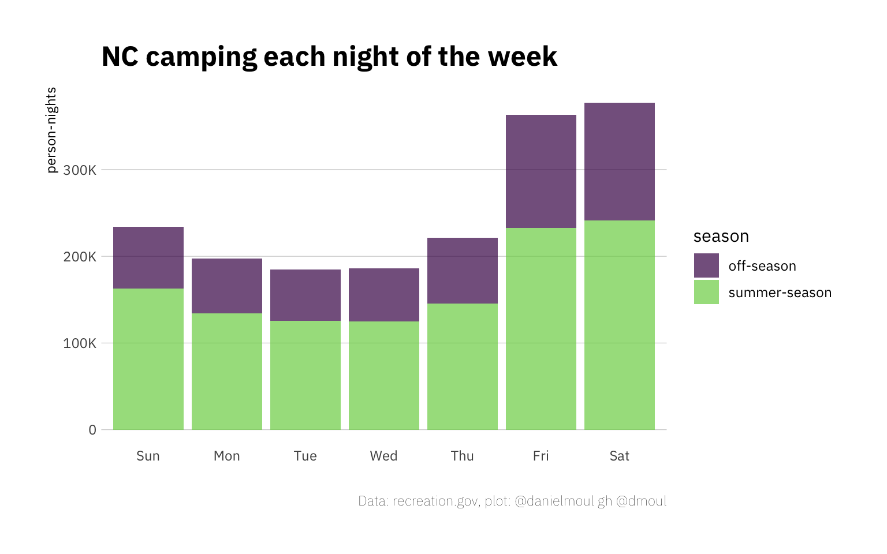
Year-on-year the number of campers has been increasing every night of the week. The most noticeable 2020 anomaly is extra Sunday, Monday and Tuesday night camping durin the summer. Presumably this was due to the pandemic shutdown, perhaps because people had fewer recreational options than other years. The unusually low off-season 2020 numbers probably reflect camp closures.
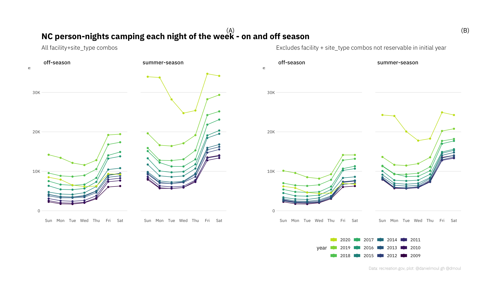